M/T Torque Data
A1 5-spd M/T, Clutch Torque Assembly:
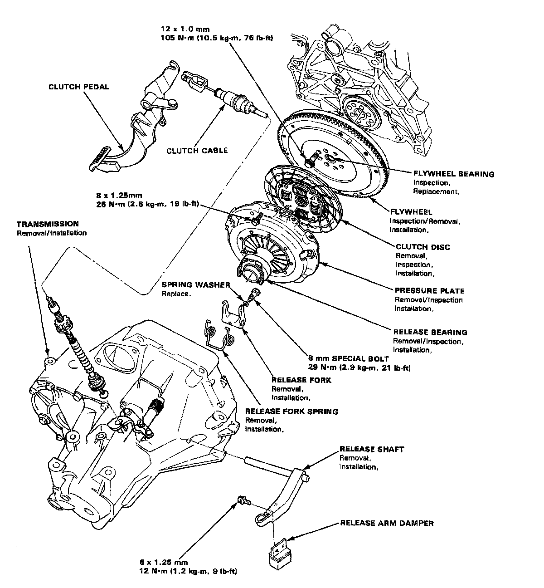
A1 5-spd M/T, Clutch Pedal (W/O Cruise Control):
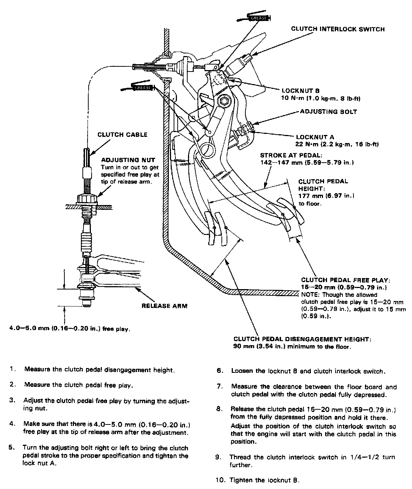
A1 5-spd M/T, Clutch Pedal (With Cruise Control):
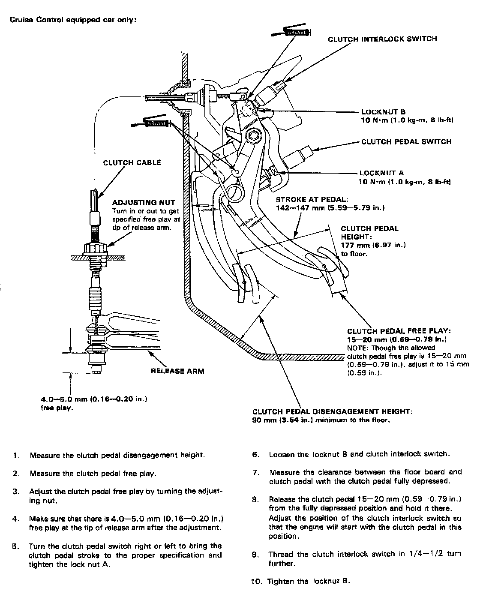
A1 5-spd M/T, Flywheel Torque & Sequence:
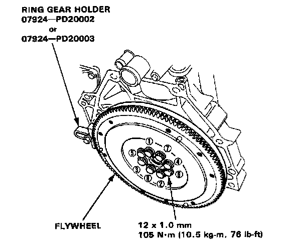
A1 5-spd M/T, Pressure Plate Torque & Sequence:
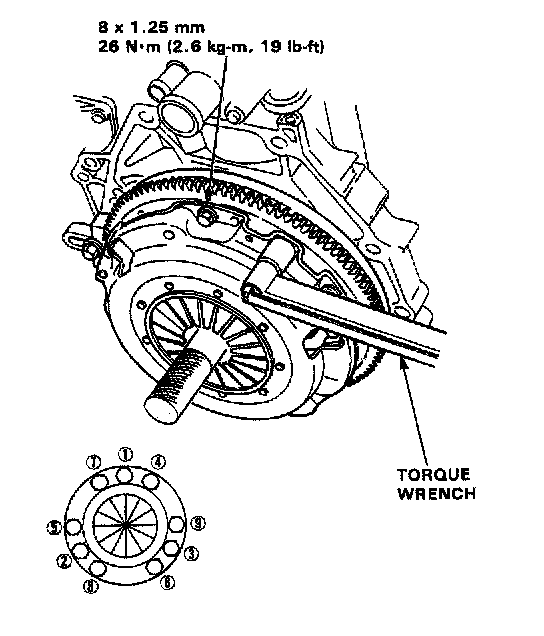
A1 5-spd M/T, Transmission Assembly 1 Of 2:
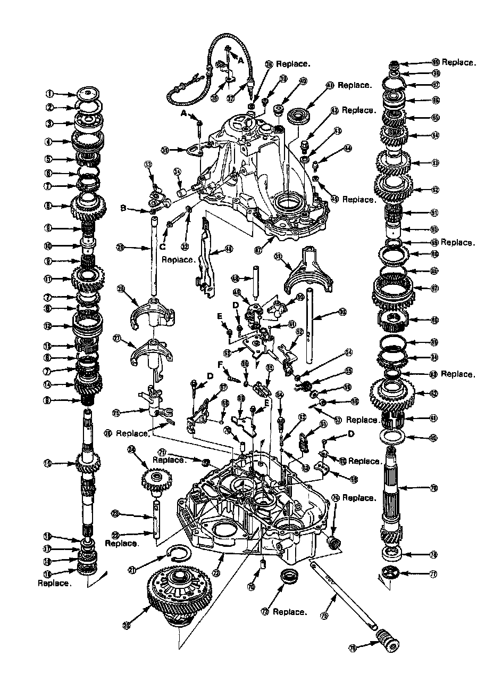
A1 5-spd M/T, Transmission Assembly 2 Of 2:
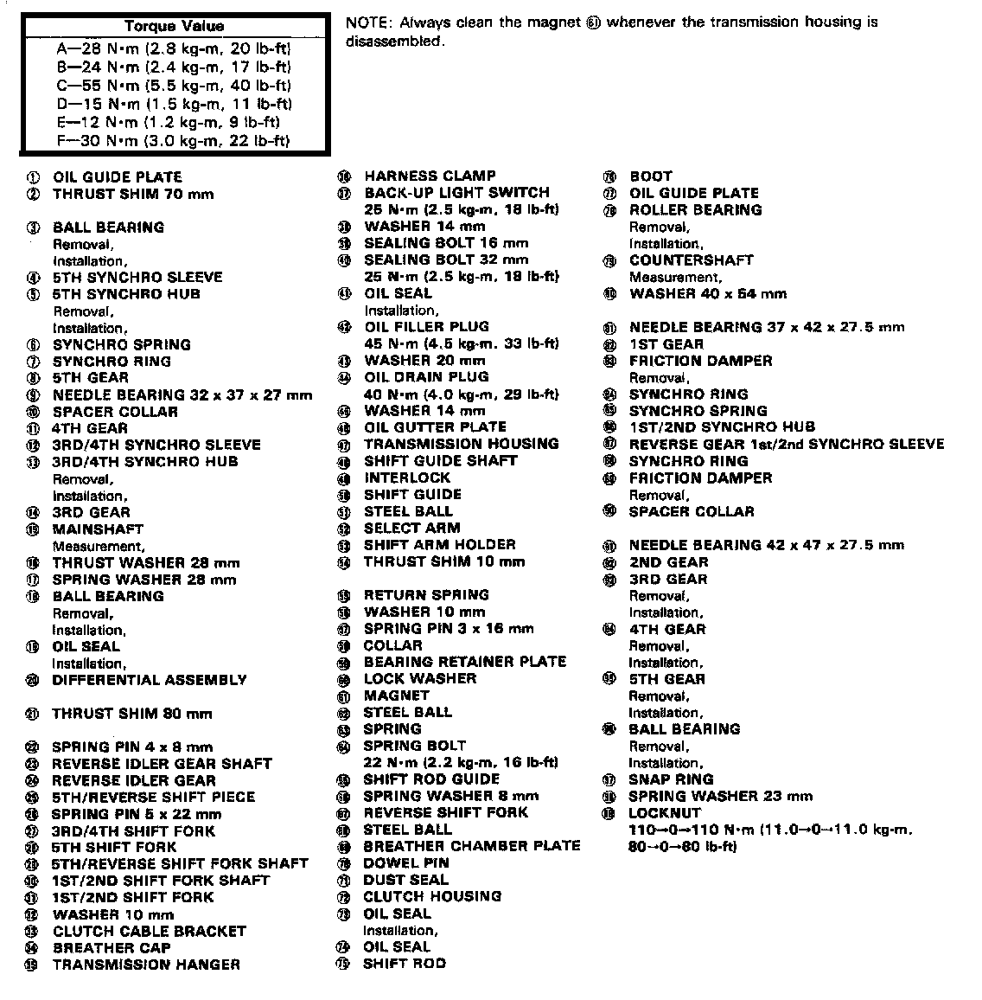
A1 5-spd M/T, Shift Rod Guide Bolt:
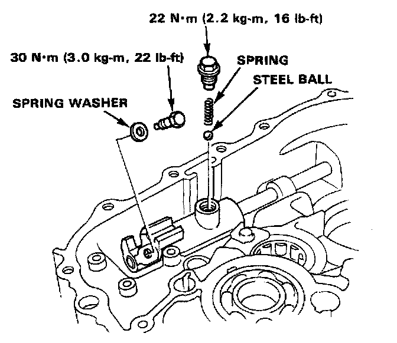
A1 5-spd M/T, Shift Arm Holder Bolt To Clutch Housing:
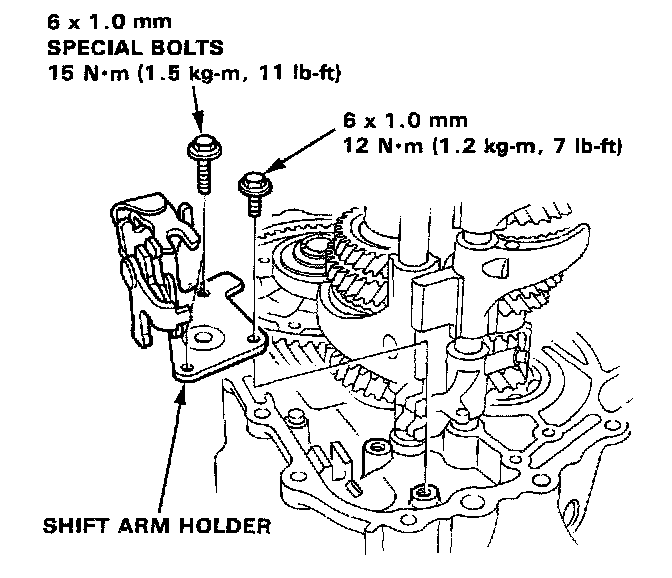
A1 5-spd M/T, Reverse Shift Fork Bracket Bolt:
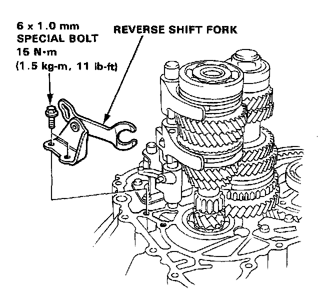
A1 5-spd M/T, Transmission Housing Attaching Bolts & Sequence:
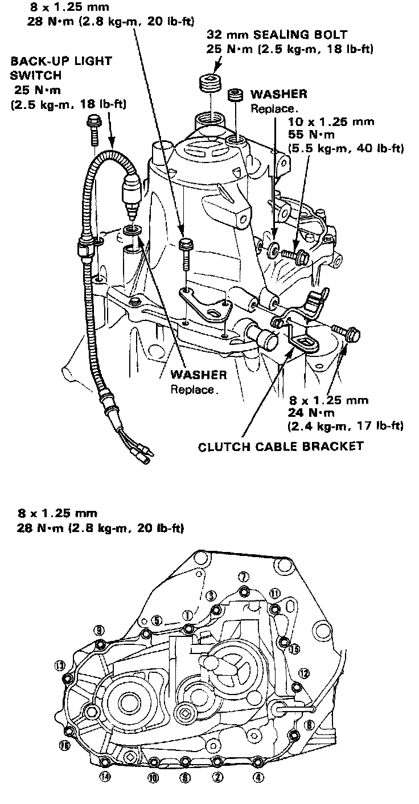
A1 5-spd M/T, Transmission Mounting:
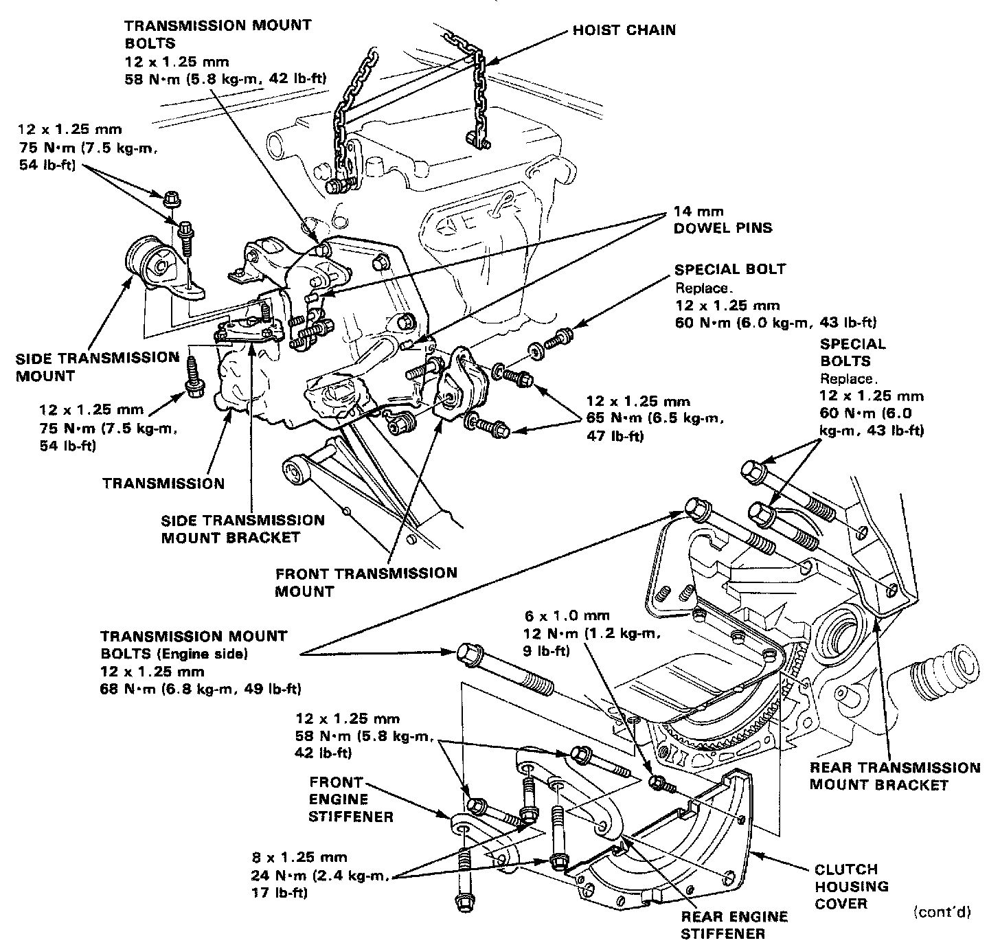
A1 5-spd M/T, Gearshift Mechanism:
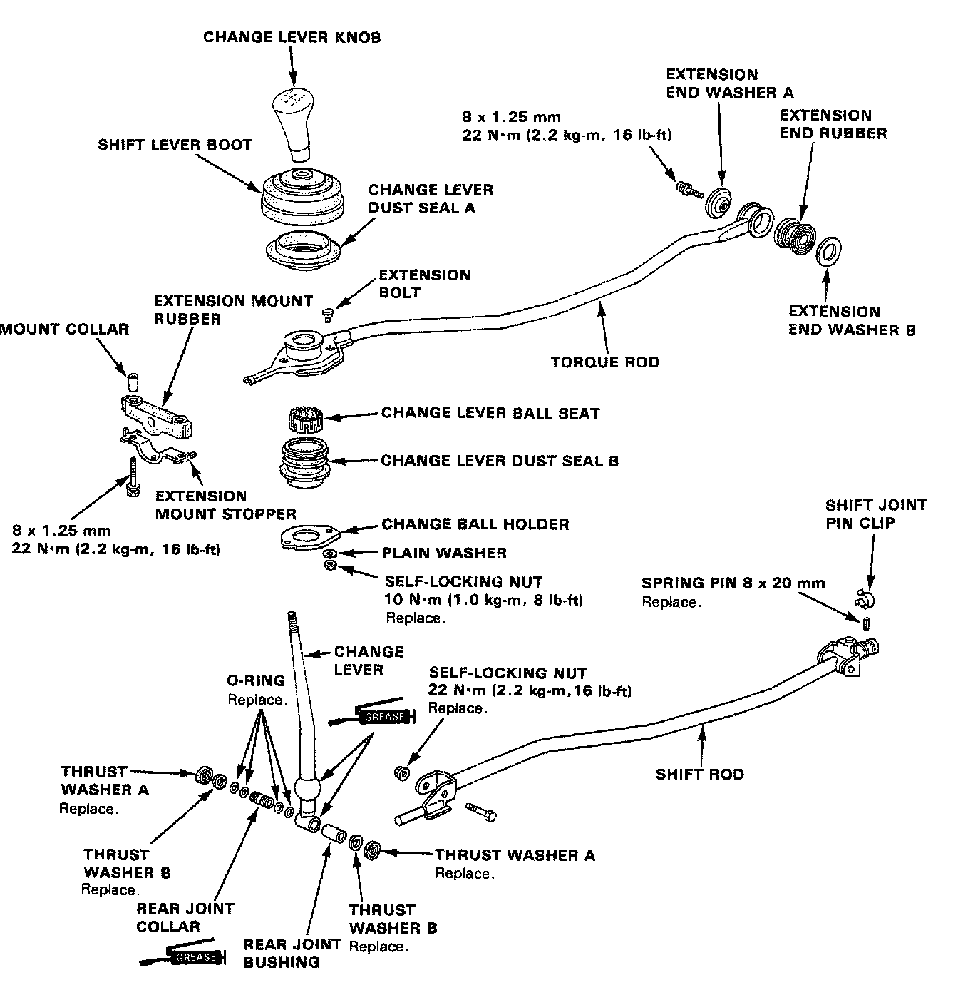